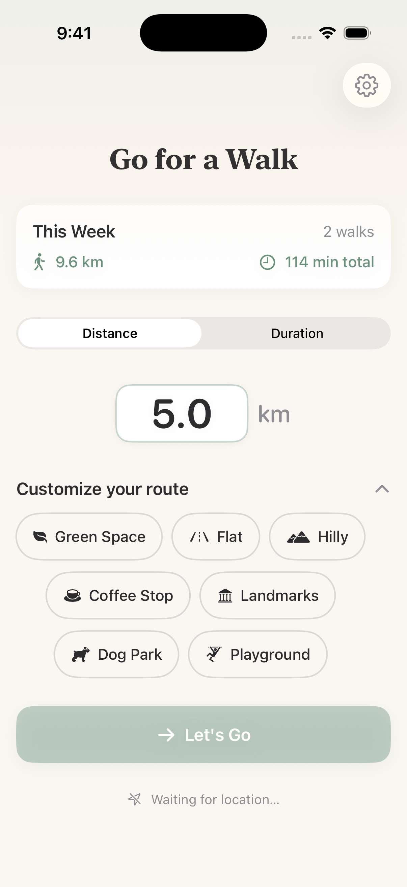
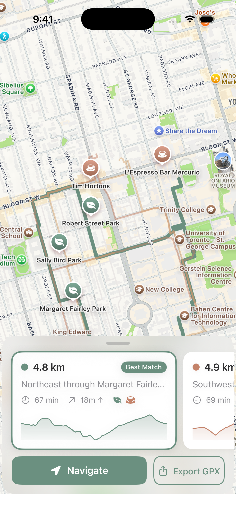
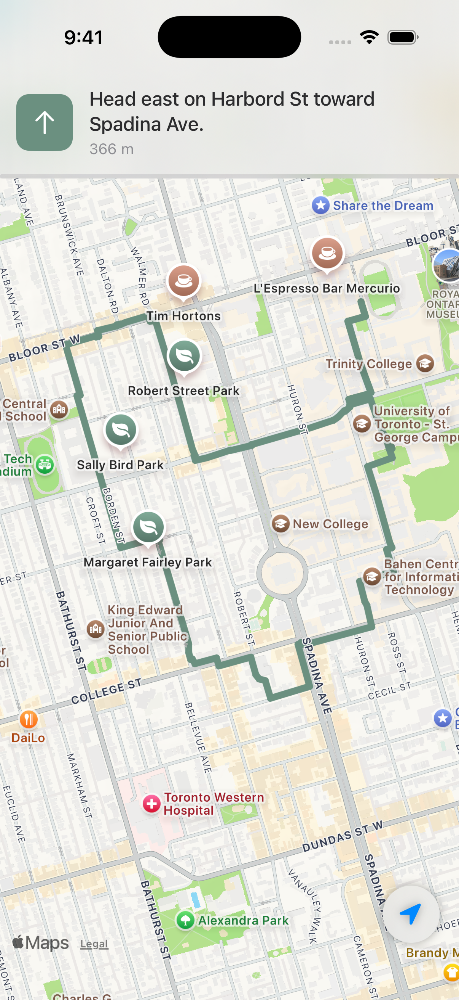
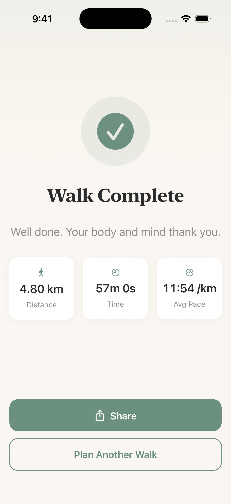

Set your distance. Pick what you want to pass — parks, coffee, landmarks, playgrounds. Get three routes through parts of your own area you've never seen.
Download on the App Store
Feeling like green space? Tap parks. Need a destination? Tap coffee. Just want to wander? Set a distance and go.
3 kilometers? 45 minutes? Whatever fits your day.
Parks, coffee stops, dog parks, landmarks, playgrounds — tap what you want to discover along the way.
Three routes, each heading a different direction. Voice-guided so your phone stays in your pocket.
Voice-guided directions so your phone stays in your pocket.
Set your distance. Pick parks, coffee, landmarks — whatever you're in the mood for.

Each route explores a different part of your area.

Turn-by-turn directions so you can look up, not down.

Distance, time, pace — all tracked.
Connect Apple Health and route times are based on how fast you actually walk.
No account. No tracking. No ads.
Your location never leaves your phone. Open the app and go.
Yes — completely free. No subscriptions, no in-app purchases, no ads. Every feature is included from the start.
Go for a Walk is available free on the App Store.
No. Your walk history, preferences, and route data stay on your device. We don't have servers, we don't run analytics, and we don't collect any personal information.
Yes. You can add parks, coffee stops, dog parks, landmarks, and playgrounds to your route. Set your preferred distance or duration.
Not yet — Go for a Walk is iOS only for now. If you'd like to see an Android version, let us know. It helps us prioritize.
iOS only for now. If you're on Android, let us know you're out there — it helps us prioritize what comes next.